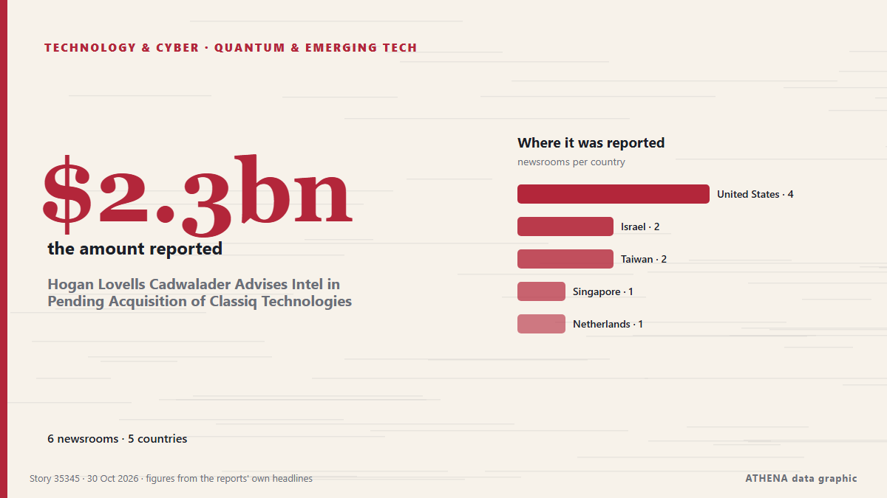

Hogan Lovells Cadwalader Advises Intel in Pending Acquisition of Classiq Technologies

Insider Brief PRESS RELEASE — Global law firm Hogan Lovells Cadwalader advised Intel Corporation (Nasdaq: INTC) as it entered into a definitive agreement to acquire Classiq Technologies Ltd, a… from The Quantum Insider
Reported independently by 6 outlets in 5 countries since 26 Oct, first by The Quantum Insider; coverage is fading. ATHENA finds no risk indicators in the coverage. Confidence is 82% (high), with 6 independent outlets corroborating it and an average source reliability of 72%. Newsrooms by country: United States (4), Israel (2), Taiwan (2). Coverage: 26 Oct to 30 Oct, 75 hours.
Why it matters: Technology and cyber developments shape security, competition and the rules of digital life.
What changed: 1 new report in the 24 hours to 30 Oct.
First reported as: Intel to acquire quantum computing software firm Classiq
At a glance
Selected, scored and written by ATHENA's published methodology. No editor intervenes in individual events. How this is produced ›
| 26 Oct 20:55 UTC | 2 |
|---|---|
| 26 Oct 23:55 UTC | 1 |
| 27 Oct 02:55 UTC | 0 |
| 27 Oct 05:55 UTC | 0 |
| 27 Oct 08:55 UTC | 0 |
| 27 Oct 11:55 UTC | 2 |
| 27 Oct 14:55 UTC | 0 |
| 27 Oct 17:55 UTC | 0 |
| 27 Oct 20:55 UTC | 0 |
| 27 Oct 23:55 UTC | 0 |
| 28 Oct 02:55 UTC | 0 |
| 28 Oct 05:55 UTC | 2 |
| 28 Oct 08:55 UTC | 0 |
| 28 Oct 11:55 UTC | 1 |
| 28 Oct 14:55 UTC | 1 |
| 28 Oct 17:55 UTC | 0 |
| 28 Oct 20:55 UTC | 0 |
| 28 Oct 23:55 UTC | 0 |
| 29 Oct 02:55 UTC | 0 |
| 29 Oct 05:55 UTC | 0 |
| 29 Oct 08:55 UTC | 0 |
| 29 Oct 11:55 UTC | 0 |
| 29 Oct 14:55 UTC | 0 |
| 29 Oct 17:55 UTC | 0 |
| 29 Oct 20:55 UTC | 0 |
| 29 Oct 23:55 UTC | 1 |
Why these numbers
Importance
Risk
Confidence
The reporting — who reported it, and when
headline as published · opens the original- The Quantum Insider · United StatesIntel to Acquire Classiq to Create a Full-stack Quantum Computing Platform
- Haaretz (English) · IsraelIntel to acquire Israeli quantum computing startup Classiq in $2.3 billion deal
- DigiTimes Asia · TaiwanIntel to acquire quantum computing software firm Classiq
- CNA (Channel NewsAsia) · SingaporeIntel to buy quantum firm Classiq for about $2.3 billion, Bloomberg News reports
- The Next Web · NetherlandsIntel to buy quantum software firm Classiq for about $2.3bn
- EE Times · United StatesIntel Wants a Quantum Business, Classiq Could Help Build One
- The Quantum Insider · United StatesIntel’s Classiq Deal May Signal a Pivot From Quiet Quantum Effort To Active Commercialization
- Haaretz (English) · Israel'We built an OS for a computer that didn't exist': Behind Classiq's $2.3 billion exit
- The Quantum Insider · United StatesHogan Lovells Cadwalader Advises Intel in Pending Acquisition of Classiq Technologies
- DigiTimes Asia · TaiwanIntel CEO sees quantum computing as third pillar